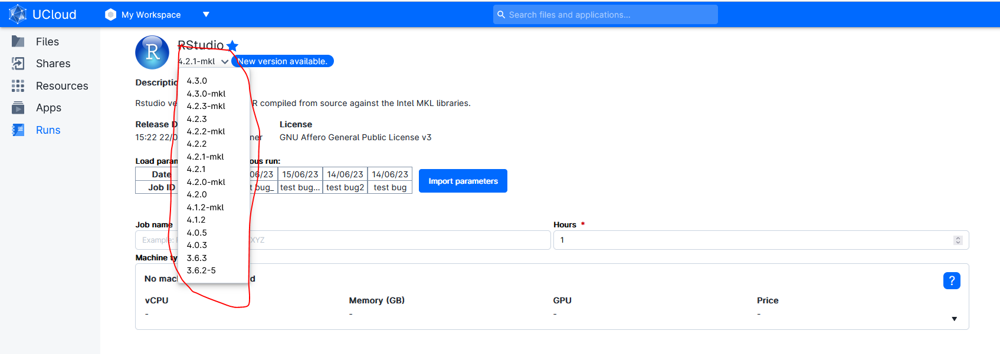
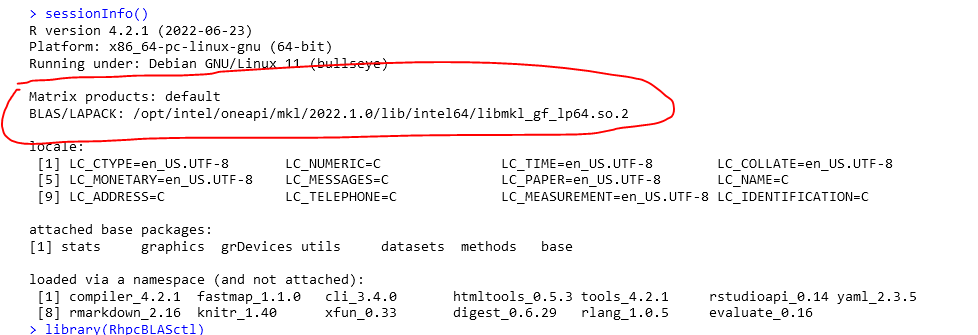
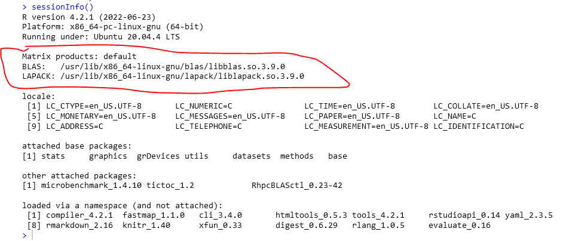
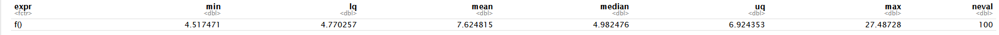
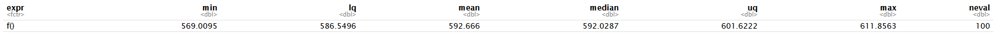
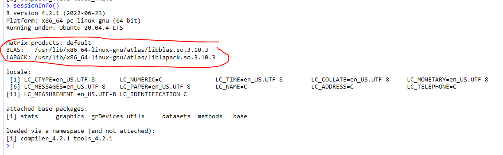

UCloud Tutorial: Speed up your Linear Alegbra calculations 78 times by choosing the right RStudio version on UCloud.
In the context of R, there are several libraries available that interface with the BLAS and LAPACK libraries to enhance their functionality or provide alternative implementations. Here are a few notable libraries:
-
base R: The base R installation includes a reference BLAS implementation that provides basic linear algebra functionality. While this implementation is not as optimized as other libraries, it serves as a fallback option when more optimized libraries are not available.
-
OpenBLAS: OpenBLAS is an optimized BLAS and LAPACK library that offers high-performance linear algebra routines. It is widely used and provides significant speed improvements over the reference BLAS implementation in base R.
-
Intel MKL: The Intel Math Kernel Library (MKL) is a highly optimized set of mathematical functions for various platforms, including CPUs from Intel. It includes efficient implementations of BLAS and LAPACK routines and is known for its excellent performance. MKL is often favored for its outstanding performance on Intel architectures.
-
ACML: The AMD Core Math Library (ACML) is an optimized library for AMD processors. It provides optimized BLAS and LAPACK routines tailored for AMD architectures.
-
vecLib: vecLib is the BLAS and LAPACK library included with macOS. It provides optimized routines for Apple hardware.
-
ATLAS: ATLAS (Automatically Tuned Linear Algebra Software) is another popular BLAS implementation that can be used as an alternative to the reference BLAS library. ATLAS utilizes an automated tuning process to generate highly optimized code specifically tailored to the host system's architecture. It offers improved performance for various linear algebra operations.
These libraries can be linked with R during installation or dynamically loaded during runtime, allowing users to choose the most suitable implementation for their specific hardware and performance requirements.
In summary, the BLAS and LAPACK libraries are essential components for numerical computations and linear algebra in R. They provide efficient and optimized routines for fundamental linear algebra operations, and various libraries such as OpenBLAS, Intel MKL, ACML, vecLib, and ATLAS enhance their functionality or provide alternative implementations for improved performance.
RStudio on UCloud
When looking at the different R/RStudio version available on UCloud (see below) it can be observed that some have the suffix "_MKL". These have "Intel MKL" as their default BLAS/LAPACK library, while versions with out the suffix have the "LibBLAST" library whihc is the base R library on linux systems.

Use the "sessionInfo()" function to check which BLAS/LAPACK library is deployed:
MKL

LibBLAS

Benchmarking the two versions
Benchmarking a simple matrix multiplication shows that the "MKL" is close 78 times faster than the "LibBLAS"!!
MKL mean = 7.63 milliseconds

LiBLAS mean = 592.666 milliseconds

library(microbenchmark)
n <- 1000
mat1 <- matrix(rnorm(n*n), ncol=n)
mat2 <- matrix(rnorm(n*n), ncol=n)
tic()
f <- function() mat1 %*% mat2
res <- microbenchmark(f(), times=100L)
res
Installing and Chaning BLAS & LAPACK Library
Select between the available BLAS/LAPACK libraies by posting the command below i the job terminal.
# BLAS Selection
sudo update-alternatives --config libblas.so.3-x86_64-linux-gnu
# LAPACK Selection
sudo update-alternatives --config liblapack.so.3-x86_64-linux-gnu
# BLAS Selection Output:
There are 2 choices for the alternative libblas.so.3-x86_64-linux-gnu (providing /usr/lib/x86_64-linux-gnu/libblas.so.3).
Selection Path Priority Status
------------------------------------------------------------
* 0 /opt/intel/oneapi/mkl/2022.1.0/lib/intel64//libmkl_rt.so 50 auto mode
1 /opt/intel/oneapi/mkl/2022.1.0/lib/intel64//libmkl_rt.so 50 manual mode
2 /usr/lib/x86_64-linux-gnu/blas/libblas.so.3 10 manual mode
Press <enter> to keep the current choice[*], or type selection number:
Install other libraries.
Changing the BLAS/LAPACK libraries is not possible for the "MKL" versions of the RStudio applications on UCloud.
# install OpenBLAS
sudo apt-get install libopenblas-base
# install ATLAS
sudo apt-get install libatlas3-base liblapack3
# BLAS Selection
sudo update-alternatives --config libblas.so.3-x86_64-linux-gnu
# BLAS Selection Output:
There are 4 choices for the alternative libblas.so.3-x86_64-linux-gnu (providing /usr/lib/x86_64-linux-gnu/libblas.so.3).
Selection Path Priority Status
------------------------------------------------------------
* 0 /usr/lib/x86_64-linux-gnu/openblas-pthread/libblas.so.3 100 auto mode
1 /opt/intel/oneapi/mkl/2022.1.0/lib/intel64//libmkl_rt.so 50 manual mode
2 /usr/lib/x86_64-linux-gnu/atlas/libblas.so.3 35 manual mode
3 /usr/lib/x86_64-linux-gnu/blas/libblas.so.3 10 manual mode
4 /usr/lib/x86_64-linux-gnu/openblas-pthread/libblas.so.3 100 manual mode
Press <enter> to keep the current choice[*], or type selection number: ^C
Select an alternative library (Atlas libraries in this case)
Open R and confirm the change of BLAS/LAPACK library using "sessionInfo()" function.
